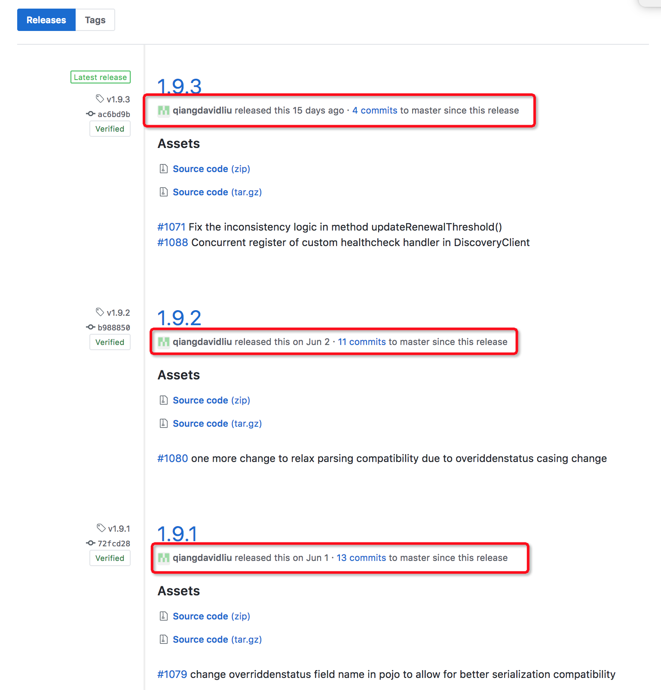

<!DOCTYPE HTML>
<html lang="zh-CN">
<head><meta name="generator" content="Hexo 3.8.0">
    <!--Setting-->
    <meta charset="UTF-8">
    <meta name="viewport" content="width=device-width, user-scalable=no, initial-scale=1.0, maximum-scale=1.0, minimum-scale=1.0">
    <meta http-equiv="X-UA-Compatible" content="IE=Edge,chrome=1">
    <meta http-equiv="Cache-Control" content="no-siteapp">
    <meta http-equiv="Cache-Control" content="no-transform">
    <meta http-equiv="pragma" content="no-cache">
    <meta http-equiv="Cache-Control" content="no-cache, must-revalidate">
    <meta http-equiv="expires" content="Mon Apr 06 2020 02:12:39 GMT+0800 (CST)">
    <meta name="renderer" content="webkit|ie-comp|ie-stand">
    <meta name="apple-mobile-web-app-capable" content="张万众的博客 - 关注Spring Cloud、Docker">
    <meta name="apple-mobile-web-app-status-bar-style" content="black">
    <meta name="format-detection" content="telephone=no,email=no,adress=no">
    <meta name="browsermode" content="application">
    <meta name="screen-orientation" content="portrait">
    <meta name="theme-version" content="1.2.3">
    <meta name="root" content="/">
    
    <!--SEO-->

    <meta name="keywords" content="Spring Cloud,Eureka">


    <meta name="description" content="最近朋友圈被Eureka 2.x停止开发的新闻刷屏，例如：

Eureka 2.0 开源工作宣告停止，继续使用风险自负
凉凉了，Eureka 宣布闭源，Spring Cloud 何去何从？

关于第二篇，我想说，这是在造谣。

不妨来看一下官方的言论：

The open source wor...">


<meta name="robots" content="all">
<meta name="google" content="all">
<meta name="googlebot" content="all">
<meta name="verify" content="all">
    <!--Title-->


<title>关于Eureka 2.x，别再人云亦云了！ | 张万众的博客 - 关注Spring Cloud、Docker</title>


    <link rel="alternate" href="../../atom.html" title="张万众的博客 - 关注Spring Cloud、Docker" type="application/atom+xml">


    

    


<link rel="stylesheet" href="../../static/css/bootstrap.min-271a649e0635d6fa1b.css">
<link rel="stylesheet" href="../../static/css/font-awesome.min-ac2bebcf7fb5b26.css">
<link rel="stylesheet" href="../../static/css/style-6f3c140f6eee20e6591da00ec0.css">


    


    <script>
        var _hmt = _hmt || [];
        (function() {
            var hm = document.createElement("script");
            hm.src = "https://hm.baidu.com/hm.js?13766878cde148282622871dd245a973";
            var s = document.getElementsByTagName("script")[0];
            s.parentNode.insertBefore(hm, s);
        })();
    </script>


    

</head>

</html>
<!--[if lte IE 8]>
<style>
    html{ font-size: 1em }
</style>
<![endif]-->
<!--[if lte IE 9]>
<div style="ie">你使用的浏览器版本过低，为了你更好的阅读体验，请更新浏览器的版本或者使用其他现代浏览器，比如Chrome、Firefox、Safari等。</div>
<![endif]-->

<body>
    
    <nav class="main-navigation">
    <div class="container">
        <div class="row clearfix">
            <div class="col-md-12 column">
                <nav class="navbar navbar-default" style="background-color:#fff;border:0;margin-bottom:0" role="navigation">
                    <div class="navbar-header">
                        <button type="button" class="navbar-toggle" data-toggle="collapse" data-target="#navbar-collapse-1">
                            <span class="sr-only">切</span>
                            <span class="icon-bar"></span>
                            <span class="icon-bar"></span>
                            <span class="icon-bar"></span>
                        </button>
                        <a class="logo" href="../../index.html">
                            张万众的博客
                        </a>
                    </div>

                    <div class="collapse navbar-collapse" style="border:0;" id="navbar-collapse-1">
                        <ul class="nav navbar-nav">
                            
                                
                                    <li>
                                        <a href="../../about.html" target="_blank">
                                            <i class="fa fa-user"></i>
                                            关于我
                                        </a>
                                    </li>
                                
                            
                                
                                    <li>
                                        <a href="../../archives.html" target="_blank">
                                            <i class="fa fa-archive"></i>
                                            归档
                                        </a>
                                    </li>
                                
                            
                                
                                    <li class="dropdown">
                                        <a href="#" class="dropdown-toggle" data-toggle="dropdown" data-hover="dropdown">
                                            <i class="fa fa-fire"></i>
                                            系列课程
                                            <strong class="caret"></strong>
                                        </a>
                                        <ul class="dropdown-menu">
                                            
                                                <li>
                                                    <a href="../../docker/00-docker-lession-index.html" target="_blank">
                                                        <i class="fa "></i>
                                                        Docker系列教程
                                                    </a>
                                                </li>
                                            
                                                <li>
                                                    <a href="../spring-cloud-index.html" target="_blank">
                                                        <i class="fa "></i>
                                                        Spring Cloud系列教程
                                                    </a>
                                                </li>
                                            
                                                <li>
                                                    <a href="../../spring-boot/spring-boot-index.html" target="_blank">
                                                        <i class="fa "></i>
                                                        Spring Boot系列教程
                                                    </a>
                                                </li>
                                            
                                        </ul>
                                    </li>
                                
                            
                                
                                    <li class="dropdown">
                                        <a href="#" class="dropdown-toggle" data-toggle="dropdown" data-hover="dropdown">
                                            <i class="fa fa-book"></i>
                                            开源书
                                            <strong class="caret"></strong>
                                        </a>
                                        <ul class="dropdown-menu">
                                            
                                                <li>
                                                    <a href="../../books/rocketmq.html" target="_blank">
                                                        <i class="fa fa-rocket"></i>
                                                        RocketMQ开发者指南
                                                    </a>
                                                </li>
                                            
                                                <li>
                                                    <a href="../../books/skywalking.html" target="_blank">
                                                        <i class="fa fa-skyatlas"></i>
                                                        Skywalking 6.2.0中文文档
                                                    </a>
                                                </li>
                                            
                                        </ul>
                                    </li>
                                
                            
                                
                                    <li class="dropdown">
                                        <a href="#" class="dropdown-toggle" data-toggle="dropdown" data-hover="dropdown">
                                            <i class="fa fa-cog"></i>
                                            工具
                                            <strong class="caret"></strong>
                                        </a>
                                        <ul class="dropdown-menu">
                                            
                                                <li>
                                                    <a href="../../tools/markdown2.html" target="_blank">
                                                        <i class="fa "></i>
                                                        微信排版工具2.0
                                                    </a>
                                                </li>
                                            
                                        </ul>
                                    </li>
                                
                            
                        </ul>
                        
                            <form id="search-form" class="navbar-form navbar-right">
                                <div class="form-group input-group">
                                    <input type="text" id="local-search-input" class="form-control" placeholder="搜我...">
                                    <span class="input-group-btn">
                                        <a class="btn btn-default">
                                            <i class="fa fa-search"></i>
                                        </a>
                                    </span>
                                </div>
                                <div id="local-search-result" class="local-search-result-cls"></div>
                            </form>
                        
                    </div>
                </nav>
            </div>
        </div>
    </div>
</nav>

    <a href="javascript:;" target="_blank">
        
    </a>


    <section class="content-wrap">
        <div class="container">
            <div class="row">
                <main class="col-md-8 main-content m-post">
                    

<p id="process"></p>
<article class="post">
    <div class="post-head">
        <h1 id="关于Eureka 2.x，别再人云亦云了！">
            
                关于Eureka 2.x，别再人云亦云了！
            
        </h1>
        <div class="post-meta">
    
        <span class="categories-meta fa-wrap">
            <i class="fa fa-folder-open-o"></i>
            <a class="category-link" href="javascript:;">Spring Cloud</a>
        </span>
    

    
        <span class="fa-wrap">
            <i class="fa fa-tags"></i>
            <span class="tags-meta">
                
                    <a class="tag-link" href="javascript:;">Eureka</a> <a class="tag-link" href="javascript:;">Spring Cloud</a>
                
            </span>
        </span>
    

    
        
        <span class="fa-wrap">
            <i class="fa fa-clock-o"></i>
            <span class="date-meta">2018/07/11</span>
        </span>
        
            <span class="fa-wrap">
                <i class="fa fa-eye"></i>
                <span id="busuanzi_value_page_pv"></span>
            </span>
        
    
</div>
        
        
    </div>
    
    <div class="post-body post-content" id="post-content">
        
    <div class="toc-article">
        <strong>
            目录
        </strong>
        <div class="toc-content">
            <ol class="toc"><li class="toc-item toc-level-2"><a class="toc-link" href="#关于Eureka版本"><span class="toc-text">关于Eureka版本</span></a></li><li class="toc-item toc-level-2"><a class="toc-link" href="#谈谈2-x的流产"><span class="toc-text">谈谈2.x的流产</span></a></li><li class="toc-item toc-level-2"><a class="toc-link" href="#不是个例"><span class="toc-text">不是个例</span></a></li><li class="toc-item toc-level-2"><a class="toc-link" href="#其他项目的类似情况"><span class="toc-text">其他项目的类似情况</span></a></li><li class="toc-item toc-level-2"><a class="toc-link" href="#退一万步"><span class="toc-text">退一万步</span></a></li><li class="toc-item toc-level-2"><a class="toc-link" href="#总结"><span class="toc-text">总结</span></a></li></ol>
        </div>
    </div>


        <p>最近朋友圈被Eureka 2.x停止开发的新闻刷屏，例如：</p>
<ul>
<li><a href="javascript:;" target="_blank" rel="noopener">Eureka 2.0 开源工作宣告停止，继续使用风险自负</a></li>
<li><a href="javascript:;" target="_blank" rel="noopener">凉凉了，Eureka 宣布闭源，Spring Cloud 何去何从？</a></li>
</ul>
<p>关于第二篇，我想说，这是在造谣。</p>
<a id="more"></a>
<p>不妨来看一下官方的言论：</p>
<blockquote>
<p>The open source work on eureka 2.0 has been discontinued. The code base and artifacts that were released as part of the existing repository of work on the 2.x branch is considered use at your own risk.</p>
<blockquote>
<p>来自：<a href="javascript:;" target="_blank" rel="noopener">https://github.com/Netflix/eureka/wiki</a></p>
</blockquote>
</blockquote>
<p>看清楚官方的言辞：官方只是说Eureka 2.0的开发被停止了，如果您将Eureka 2.0分支用在生产，将后果自负！</p>
<p>看起来挺吓人的。但真的那么可怕吗？</p>
<h2 id="关于Eureka版本"><a href="#关于Eureka版本" class="headerlink" title="关于Eureka版本"></a>关于Eureka版本</h2><p><strong>Eureka 2.x从来就没有正式发布过！</strong> 目前最新的稳定版本是1.9.3。笔者第一次看到Eureka 2.0的文章是2016年，那时候官方宣称要开发Eureka 2.0，使用小批量的消息推送替代Eureka 1.x中的纯心跳机制（基于定时任务）的消息传递。</p>
<p>但是两年过去了，Eureka 2.0最终没有孵化出来，但是绝不代表Eureka的闭源！官方依然在积极地维护Eureka 1.x！</p>
<p>不妨来看一下Eureka的发布历史：<a href="javascript:;" target="_blank" rel="noopener">https://github.com/Netflix/eureka/releases</a></p>
<p></p>
<p>可以看到，Eureka的版本维护相当勤快！</p>
<h2 id="谈谈2-x的流产"><a href="#谈谈2-x的流产" class="headerlink" title="谈谈2.x的流产"></a>谈谈2.x的流产</h2><p>就笔者的研究来看，官方关闭2.x分支至少2年了。只是最近可能考虑到会有团队会将Eureka 2.x用于线上，甚至基于2.x开发，所以友情提示一下。</p>
<p>但是问题是：大部分用户都是因为Spring Cloud才接触到Eureka，Spring Cloud使用的是Eureka 1.x！退一万步，你会在自己项目中使用一个非正式发布的版本吗？</p>
<p>在我来看，这就是个友情提示，连个新闻都算不上。宣布停止开发已经停止2年的分支，还能算是新闻吗？</p>
<h2 id="不是个例"><a href="#不是个例" class="headerlink" title="不是个例"></a>不是个例</h2><p>事实上，这不是Netflix（开源Eureka的公司）第一次跳票了。</p>
<p>2016年，Netflix宣布将在16年底或17年初开源Zuul 2.x，结果写完发现太复杂了，而且性能提升也没有达到预期。于是官方选择完全重构！知道2018年1月，Zuul 2.x才被开源，2018年4月才发布到中央仓库！</p>
<p><a href="javascript:;" target="_blank" rel="noopener">https://github.com/netflix/zuul/tree/1.x</a></p>
<blockquote>
<p>A lot of people are asking about the status of Zuul 2.0. We are actively working on open sourcing it and with it, likely many filters that we use at Netflix. Yes, we realize it’s been a long time coming. When we initially wrote Zuul 2.0, we heavily relied on RxJava to string filters together with Netty. This ended up adding a lot of complexity to the Zuul 2.0 core as well as made it quite difficult to operate and debug. We didn’t think it was right to release Zuul 2.0 like this. So we spent a lot of time refactoring out this pattern, using Netty constructs directly. This took the better part of a year to complete and deploy safely within Netflix. So this work is now done. We are working towards releasing this much better, easier to understand, and more reliable Zuul 2.0. Obviously Netflix’s business priorities take precedence to our open sourcing efforts, so as we get free time we will put efforts to open sourcing! Stay Tuned.</p>
<p>Current Zuul 2 development is on the <strong>2.1</strong> branch</p>
</blockquote>
<h2 id="其他项目的类似情况"><a href="#其他项目的类似情况" class="headerlink" title="其他项目的类似情况"></a>其他项目的类似情况</h2><p>不妨多聊聊。相信大家都很熟悉Netty，或者至少听说过。</p>
<p>Netty也有类似的情况。Netty团队开源Netty 5后，发现代码复杂度过高，同时性能提升也并没有预期中的那么好，于是停止了Netty 5的开发。</p>
<p>那是不是说Netty 5闭源了？</p>
<h2 id="退一万步"><a href="#退一万步" class="headerlink" title="退一万步"></a>退一万步</h2><p>退一万步讲，Eureka即使闭源，Spring Cloud也不至于凉凉。Spring Cloud支持使用Eureka、Zookeeper、Consul实现服务发现的能力。</p>
<p>从Eureka切换成Zookeeper只需要改个依赖，加两行配置就可以了。</p>
<h2 id="总结"><a href="#总结" class="headerlink" title="总结"></a>总结</h2><p>总而言之：</p>
<ul>
<li>Eureka没有闭源，是Eurkea 2.x分支不再维护！</li>
<li>Spring Cloud并不强依赖Eureka，Spring Cloud Commons实现了通用抽象，允许我们使用自己喜欢的服务发现组件！</li>
<li>悲观是好事，说明有危机感，但是过度解读，消费开发人员的情怀就过分了。</li>
</ul>

        <h2>相关文章</h2><ul><li><a href="../finchley-5/index.html">跟我学Spring Cloud（Finchley版）-05-服务注册与服务发现-Eureka入门</a></li><li><a href="../../spring-cloud-sum-eureka/index.html">Spring Cloud中，Eureka常见问题总结</a></li><li><a href="../../spring-cloud-alibaba-migration/spring-cloud-alibaba-1/index.html">Spring Cloud Alibaba迁移指南1：零代码从Eureka迁移到Nacos</a></li><li><a href="../finchley-6/index.html">跟我学Spring Cloud（Finchley版）-06-服务注册与服务发现-Eureka深入</a></li><li><a href="../finchley-out-1-eureka-security/index.html">跟我学Spring Cloud（Finchley版）番外-01-Eureka安全详解</a></li></ul>
    </div>
    
    <div class="post-footer">
        <div class="col-sm-10">
            <div>
                <b>本文链接</b>：<a href="" target="_blank">关于Eureka 2.x，别再人云亦云了！</a>
            </div>
            <div>
                
                    转载声明：本博客由张万众创作，采用 <a href="javascript:;" target="_blank"> CC BY 3.0 CN </a> 许可协议。可自由转载、引用，但需署名作者且注明文章出处。如转载至微信公众号，请在文末添加作者公众号二维码。
                
            </div>
            <div>
                
            </div>
        </div>
        <div class="col-sm-2">
            
        </div>
    </div>
</article>

<div class="article-nav prev-next-wrap clearfix">
    
        <a target="_blank" href="../../docker/kubernetes-deploy-by-kubespray/index.html" class="pre-post btn btn-default" title="使用Kubespray部署生产可用的Kubernetes集群（1.11.2）">
            <i class="fa fa-angle-left fa-fw"></i><span class="hidden-lg">上一篇</span>
            <span class="hidden-xs">使用Kubespray部署生产可用的Kubernetes集群（1.11.2）</span>
        </a>
    
    
        <a target="_blank" href="../../docker/28-docker-compose-in-action-elk/index.html" class="next-post btn btn-default" title="Docker系列教程28-实战：使用Docker Compose运行ELK">
            <span class="hidden-lg">下一篇</span>
            <span class="hidden-xs">Docker系列教程28-实战：使用Docker Compose运行ELK</span><i class="fa fa-angle-right fa-fw"></i>
        </a>
    
</div>


    <div id="comments">
        
   <p>评论系统未开启，无法评论！</p>

    </div>


                </main>
                
    <aside class="col-md-4 sidebar">
        
        <div class="widget about-me">
    <div class="row">
        <div class="col-md-5">
            
        </div>
        <div class="col-md-7">
            <a class="series-a" href="javascript:void(0)">公众号</a>
            <ul>
                <li>• 技术干货推送</li>
                <li>• 免费资料领取</li>
                <li><b>• 扫码领取更多惊喜</b></li>
            </ul>
        </div>
    </div>
    
        <div class="row">
            <div class="col-md-5">
                
            </div>
            <div class="col-md-7">
                <a class="series-a" href="javascript:void(0)">小程序</a>
                <ul>
                    <li>• 原创笔记</li>
                    <li>• 独家心法</li>
                    <li><b>• 扫码领取</b></li>
                </ul>
            </div>
        </div>
    
</div>


        
        
    <div class="ad">
        <div class="row">
            <div class="col-md-12">
                <a href="javascript:;" rel="nofollow" target="_blank">
                    
                </a>
            </div>
        </div>
    </div>


        
        <div class="widget">
    <div class="row">
        <div class="col-md-3">
            
        </div>
        <div class="col-md-9">
            <a class="series-a" target="_blank" href="../spring-cloud-index.html">Spring Cloud系列教程</a>
            <p>全面、通俗易懂的Spring Cloud教程</p>
        </div>
    </div>
    <div class="row">
        <div class="col-md-3">
            
        </div>
        <div class="col-md-9">
            <a class="series-a" target="_blank" href="javascript:;">Spring Cloud Alibaba视频教程</a>
            <p>全网唯一，你值得拥有</p>
        </div>
    </div>
    <div class="row">
        <div class="col-md-3">
            
        </div>
        <div class="col-md-9">
            <a class="series-a" target="_blank" href="../../docker/00-docker-lession-index.html">Docker系列教程</a>
            <p>Docker系列</p>
        </div>
    </div>
    <div class="row">
        <div class="col-md-3">
            
        </div>
        <div class="col-md-9">
            <a class="series-a" target="_blank" href="../../spring-boot/spring-boot-index.html">Spring Boot系列教程</a>
            <p>Boot是基石...</p>
        </div>
    </div>
</div>


        
        
    <div class="widget">
        <h3 class="title">分类</h3>
        <ul class="category-list"><li class="category-list-item"><a class="category-list-link" href="javascript:;"><i class="fa" aria-hidden="true">Docker</i></a><span class="category-list-count">31</span></li><li class="category-list-item"><a class="category-list-link" href="javascript:;"><i class="fa" aria-hidden="true">Kubernetes</i></a><span class="category-list-count">2</span></li><li class="category-list-item"><a class="category-list-link" href="javascript:;"><i class="fa" aria-hidden="true">Spring Boot</i></a><span class="category-list-count">6</span></li><li class="category-list-item"><a class="category-list-link current" href="javascript:;"><i class="fa" aria-hidden="true">Spring Cloud</i></a><span class="category-list-count">94</span></li><li class="category-list-item"><a class="category-list-link" href="javascript:;"><i class="fa" aria-hidden="true">Spring Cloud Alibaba</i></a><span class="category-list-count">16</span></li><li class="category-list-item"><a class="category-list-link" href="javascript:;"><i class="fa" aria-hidden="true">Spring Cloud Stream</i></a><span class="category-list-count">1</span></li><li class="category-list-item"><a class="category-list-link" href="../../categories/其他/index.html"><i class="fa" aria-hidden="true">其他</i></a><span class="category-list-count">13</span></li><li class="category-list-item"><a class="category-list-link" href="../../categories/安装教程/index.html"><i class="fa" aria-hidden="true">安装教程</i></a><span class="category-list-count">7</span></li><li class="category-list-item"><a class="category-list-link" href="../../categories/工作/index.html"><i class="fa" aria-hidden="true">工作</i></a><span class="category-list-count">20</span></li></ul>
    </div>


        
        
        
        

        
    </aside>

            </div>
        </div>
    </section>
    <footer class="main-footer">
    <div class="container">
        <div class="row">
        </div>
    </div>
</footer>

<a id="back-to-top" class="icon-btn hide">
	<i class="fa fa-chevron-up"></i>
</a>


    <div class="copyright">
    <div class="container">
        <div class="row">
            <div class="col-sm-12">
                <div class="busuanzi">
    
        访问量:
        <strong id="busuanzi_value_site_pv">
            <i class="fa fa-spinner fa-spin"></i>
        </strong>
        &nbsp; | &nbsp;
        访客数:
        <strong id="busuanzi_value_site_uv">
            <i class="fa fa-spinner fa-spin"></i>
        </strong>
        &nbsp; <strong>Since 2018-12-26</strong>
    
</div>

            </div>
            <div class="col-sm-12">
                <span>Copyright &copy; 2017
                </span> |
                <span>
                    Powered by <a href="javascript:;" class="copyright-links" target="_blank" rel="nofollow">Hexo</a>
                </span> |
                <span>
                    Theme by <a href="javascript:;" class="copyright-links" target="_blank" rel="nofollow">ITMuch</a>
                </span>
            </div>
        </div>
    </div>
</div>

<script src="../../static/js/jquery.min.js"></script>
<script src="../../static/js/bootstrap.min.js"></script>
<script src="../../static/js/bootstrap-hover-dropdown.min.js"></script>

    <script src="../../static/js/search-3f4fbd0557c869ca0516ebb5f.js"></script>


    <script async="" src="../../static/js/busuanzi.pure.mini.js"></script>


<script src="../../static/js/app-da10bb3b2ae5c8348d2bd2cc3faf.js"></script>


</body>
